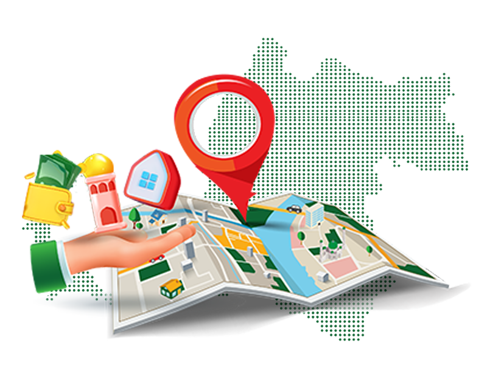

SISTEM INFORMASI WAKAF BANTEN
Informasi Wakaf Banten dalam Satu Portal
Akses informasi wakaf di Provinsi Banten secara mudah, informatif, dan terintegrasi dalam satu portal.

DATA TERKINI
Data Wakaf Banten
Ringkasan data wakaf yang telah tercatat dalam SIWAK Banten.
—
Wakaf Terdata
—
Wakif
—
Nazhir
SEBARAN WILAYAH
Peta Wakaf Banten
Jelajahi persebaran lokasi wakaf di wilayah Provinsi Banten.
Peta Sebaran Wakaf
Peta interaktif lokasi wakaf akan ditampilkan di halaman Peta Wakaf.
Buka Peta Wakaf
PEMANFAATAN
Wakaf untuk Berbagai Kemaslahatan
Informasi pemanfaatan aset wakaf berdasarkan peruntukannya.
DISTRIBUSI DATA
Sebaran Data Wakaf
Ringkasan jumlah data wakaf yang telah tercatat berdasarkan wilayah kabupaten/kota.
Kabupaten Lebak
—
Kabupaten Pandeglang
—
Kabupaten Serang
—
Kabupaten Tangerang
—
Kota Cilegon
—
Kota Serang
—
Kota Tangerang
—
Kota Tangerang Selatan
—
AKSES INTERNAL
Kelola Data Wakaf secara Terintegrasi
Operator dapat masuk ke area internal untuk mengelola, memperbarui, dan memantau data wakaf.